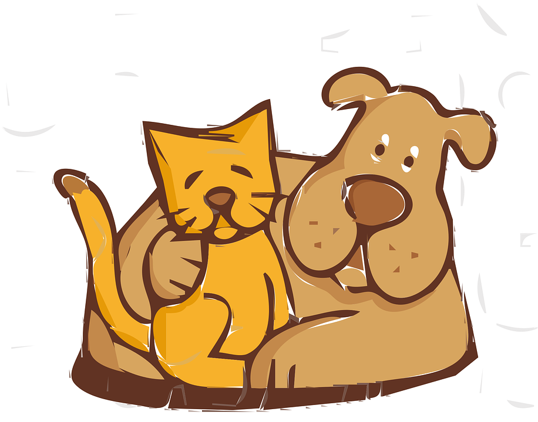

Part 4: Class Pet Challenge

Animal Clinic
You have been hired to create a software system for the Awesome Animal Clinic.
They would like to keep track of their animal patients.
Here are some attributes of the pets that they would like to track:
Create a class that keeps track of the attributes for pet records at the animal clinic.
Decide what instance variables are needed and their data types.
Make sure you use int, double, and String data types.
Make the instance variables private.
Create:
toString method that returns all the information in a PetIn the main method, create two Pet objects with different values.
Call the constructor, accessor methods, mutator methods, and toString methods to test all your code.
activecode:: challenge-Pet-ClassCreate a Pet class that keeps track of:
Create constructor, getter, setter, and toString() methods.
Create two Pet objects in the main method and test all your methods.
/**
* Pet class (complete comments)
*
* @author
* @since
*/
class Pet
{
// Instance Variables for the name, age, weight, type of animal, and breed of the pet
// Write a constructor, accessor (get) methods, mutator (set) methods)
// and a toString method. Use good commenting.
// Don't forget to complete the main method in the TesterClass below!
}
public class TesterClass
{
// main method for testing
public static void main(String[] args)
{
// Create 2 Pet objects and test all your methods
}
}The Runestone tests check:
Petpublic String toString()Pet objects created in mainmain prints information for two Pet objectsIn the last lessons, you came up with a class of your own choice relevant to your community.
Copy your class with its three instance variables, constructor, and its print() and main methods from lesson 3.4 into the active code exercise.
Create:
toString method that returns all information in the instance variablesFor example, there could be a print method with arguments that indicate how you want to print out the information.
print(format) could print the data according to an argument that is "plain" or "table".
You may also come up with another creative method for your class.
Use these methods in the main method to test them.
Make sure you use good commenting.
activecode:: community-challenge3Copy your class from lesson 3.4.
Add get, set, toString, and a method that takes a parameter.
For example, there could be a print method with arguments that indicate how you want to print out the information, print(format) where format is "plain" or "table".
public class // Add your class name here!
{
// 1. Copy your class instance variables, constructor, and print()
// 2. Create accessor (get) and mutator (set) methods for each of the instance variables.
// 3. Create a toString() method that returns all the information in the instance variables.
// 4. Add a method for your class that takes a parameter.
// For example, there could be a print method with arguments that indicate
// how you want to print out the information, print(format) where format is "plain" or "table".
// 5. Test all the methods in the main method.
public static void main(String[] args)
{
// Construct an object of your class
// call the object's methods
}
}The Runestone tests check:
print output longer than 15 charactersmain output with at least three lines of textpublic String toString()public void print(String methodPet instance variables using int, double, and StringPet instance variables privatetoString methods for the clinic recordPet objects in maintoString, and a parameterized method to the community classNext topic: 3.6 Methods: Passing and Returning References of an Object.